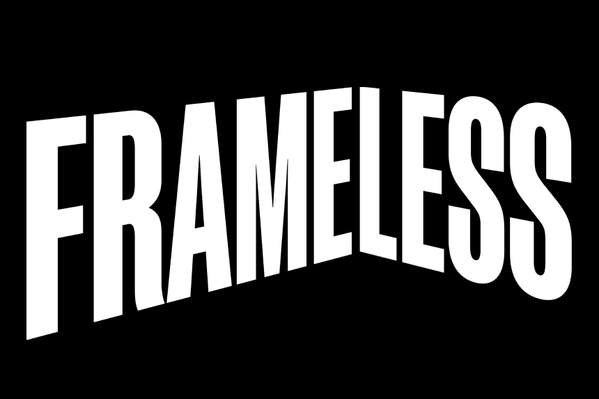
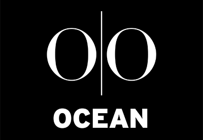

Before an AI Character Represents Your Organisation, One Risk Matters More Than Intelligence.
Most AI characters perform well in demos. The real risk appears once they're live, in a premium environment, in front of real people. This scorecard identifies exactly where your biggest gap is — before it costs you.
- Brand-gating failures in public environments are brand incidents — not technical glitches.
- JCDecaux tested every AI character in the market and rejected all of them. Architecture is everything.
- Get a personalised report — with your biggest gap identified and a clear path forward.
Free — Instant Results
Get your personalised
readiness score
Trusted by organisations where getting it wrong isn't an option.
Deployed in premium physical environments across three continents.


How It Works
Answer A Few Quick Questions
Rate your organisation across key areas — character behaviour, governance, brand-gating protocols, and reputational exposure. No technical knowledge needed.
Get Your Readiness Tier
You'll be placed into one of three tiers — Foundation Stage, Developing Readiness, or Operational Readiness — so you can see exactly where you stand before committing to a live deployment.
Receive Your Report
A detailed breakdown of your biggest gap, what your tier means in practice, and the steps organisations at your stage typically take next. Shareable PDF included.
The problem isn't
finding AI. It's finding
AI built for this.
Standard LLMs are built on the internet's average. The internet's average is nowhere near the standard of a Westfield flagship, a JCDecaux network, or a live event at Goodwood. The gap isn't ambition — it's architecture.
Response Control
Ungated AI can go off-script at any moment. One wrong answer in a premium public environment is a brand incident — not a bug report.
Visual Quality
Animated avatars and ChatGPT wrappers don't pass the test in high-visibility environments. Adults disengage immediately. You get one chance to make the impression count.
Character Behaviour
A character that breaks role — regardless of how it looks — is a liability. The question isn't whether it can handle a script. It's whether it stays in-role when it can't.
From the Field
Where most organisations are at the point of first deployment
"JCDecaux tested every AI character in the market. They rejected them all — on quality, visual fidelity, and latency. The bar isn't where most people think it is."
— Jon, Co-Founder & CEO, Performit LiveYour AI Character
Readiness Report
A structured, personalised breakdown of where your organisation stands — and exactly what to address first. Built for stakeholder conversations and confident decision-making.
- Your readiness tier — Foundation Stage, Developing Readiness, or Operational Readiness
- Your single biggest gap — the one thing to address first
- What your tier means once you go live in a real environment
- What organisations at your stage typically prioritise next
- A shareable PDF to align your team internally


AI Characters · Premium Physical Environments · Three Continents
The brands moving now
aren't making a technology
decision. They're claiming territory.
Find out where your organisation stands — and what to address before you go live. 2–3 minutes. No technical knowledge required.